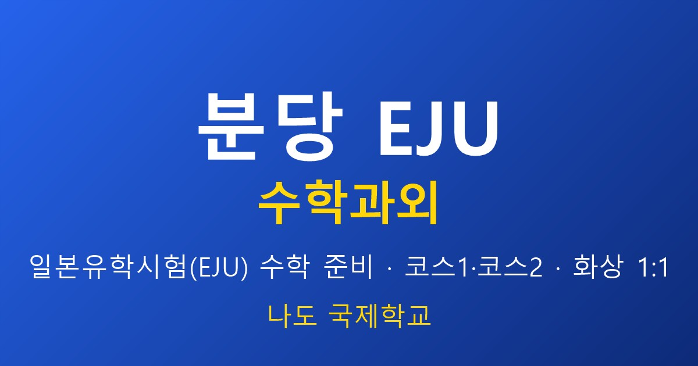

안녕하세요, EJU 지도 교사입니다. 교육열 높은 분당·성남에서는 도쿄대·오사카대·히토쓰바시 같은 최상위권을 목표로 EJU를 준비하는 학생이 많습니다. 이 학생들은 이미 개념은 대부분 알고 있습니다. 그래서 상위권의 EJU 수학 전략은 중하위권과 완전히 다릅니다. 오늘은 분당 EJU 수학과외를 상위권 관점에서, 고득점을 어떻게 방어하는지 안내드립니다.
상위권의 적은 '어려운 문제'가 아니라 '실수'입니다
제가 상위권 학생을 지도하며 늘 강조하는 말입니다. 최상위 국립대 이과는 EJU 수학에서 사실상 만점에 가까운 점수를 요구합니다. 즉 새 개념을 배우는 게 아니라, 실수 하나 없이 만점권을 지키는 것이 승부입니다. 상위권이 시험에서 무너지는 이유는 어려운 문제를 못 풀어서가 아니라, 쉬운 문제에서 계산 실수를 하거나 시간 배분에 실패해서입니다. 그래서 저는 상위권에게 실수 패턴을 데이터로 잡아 교정합니다.
고득점 3요소 — 교사가 관리하는 것
① 킬러문항 대응 — EJU에도 마지막에 변별용 고난도 문항이 나옵니다. 이걸 시간 안에 푸는 접근법(치환·경우 나누기·역이용)을 유형별로 훈련합니다.
② 시간 배분 — 만점권 학생은 쉬운 문항을 빠르고 정확하게 끝내 킬러문항에 쓸 시간을 확보해야 합니다. 실전처럼 시간을 재고 푸는 훈련이 핵심입니다.
③ 실수 제거 — 자주 틀리는 지점(부호·정의역·조건 누락)을 개인별로 잡아 반복 교정합니다.
상위권일수록 1:1이 맞는 이유
역설적이지만 상위권일수록 그룹 수업이 비효율입니다. 이미 아는 개념 강의를 다시 듣느라 시간을 버리기 때문입니다. 상위권에게 필요한 건 내가 자주 틀리는 그 유형, 내 시간 배분의 약점을 교정하는 것입니다. 이건 1:1이라야 가능합니다. 저는 상위권 학생과는 개념 강의 없이 기출·모의고사 심화와 오답 분석만으로 수업을 구성합니다.
기출을 '푸는 것'과 '분석하는 것'은 다릅니다
상위권 학생은 기출을 많이 풉니다. 하지만 맞은 문제까지 왜 그렇게 풀었는지 분석하는 학생은 드뭅니다. 저는 맞은 문제도 더 빠른 풀이가 있었는지, 틀린 문제는 어느 사고 단계에서 어긋났는지를 함께 짚습니다. 이 분석이 만점권과 상위권을 가릅니다.
정리
분당에서 상위권 목표로 EJU를 준비한다면 ① 새 개념보다 실수 제거 → ② 킬러문항 대응법 → ③ 시간 배분 실전 훈련 → ④ 맞은 문제까지 분석이 고득점의 핵심입니다. 목표가 최상위권이라면 30분 무료 상담으로 현재 점수와 실수 패턴부터 진단해 드립니다. 분당·성남은 방문·화상 모두 가능합니다.